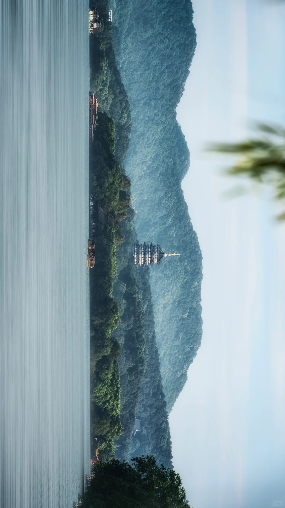
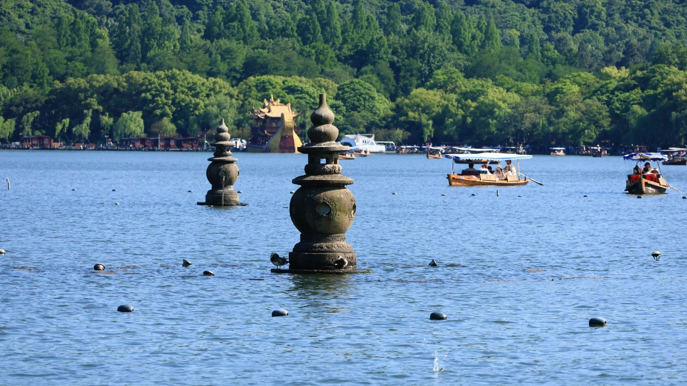

世界文化遗产 | 国家5A级景区 | 杭州标志性景点

西湖位于浙江省杭州市西湖区，是中国大陆首批国家重点风景名胜区和中国十大风景名胜之一。西湖有100多处公园景点，有"西湖十景"、"新西湖十景"、"三评西湖十景"之说，有60多处国家、省、市级重点文物保护单位和20多座博物馆，有断桥、雷峰塔、钱王祠、净慈寺、苏小小墓等景点。
西湖以其秀丽的湖光山色和众多的名胜古迹闻名中外，是中国著名的旅游胜地，也被誉为"人间天堂"。2011年6月24日，杭州西湖文化景观被列入《世界遗产名录》。
西湖三面环山，面积约6.39平方千米，东西宽约2.8千米，南北长约3.2千米，绕湖一周近15千米。湖中被孤山、白堤、苏堤、杨公堤分隔，按面积大小分别为外西湖、西里湖、北里湖、小南湖及岳湖等五片水面，苏堤、白堤越过湖面，小瀛洲、湖心亭、阮公墩三个小岛鼎立于外西湖湖心，夕照山的雷峰塔与宝石山的保俶塔隔湖相映，由此形成了"一山、二塔、三岛、三堤、五湖"的基本格局。
